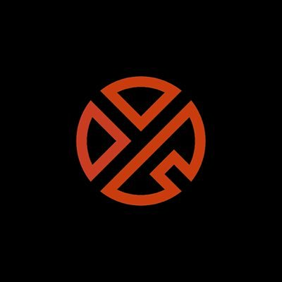

Zhang Yixing (simplified Chinese: 张艺兴; traditional Chinese: 張藝興) (born October 7, 1991), known professionally as Lay (Korean: 레이), is a Chinese singer, songwriter, dancer, and actor. He is a member of the South Korean-Chinese boy group Exo and its sub-unit Exo-M. He was first known after participating in the Chinese TV talent show Star Academy in 2005.
In January 2015, Lay was ranked fifth on Baidu's "2014 Top 10 Most Popular Celebrities" list. In September 2015, he released his autobiography titled Standing Firm at 24, which broke several online book records. In July 2016, Lay was appointed by the Communist Youth League of China (CYLC) of Changsha as a publicity ambassador, the first celebrity to hold such title. On October 28, 2016, Lay released his first EP Lose Control in South Korea and China. The EP was a commercial success peaking at number one on the Gaon Album Chart as well as number four on Billboard's US World Albums chart and made him the first Chinese artist to enter the iTunes Top 60. Kantar Millward Brown and China’s business magazine CBN Weekly recently launched the CelebrityZ Top 100 Most Valuable Celebrities where he came in at the 23rd spot.
In September 2017, he came in at the 20th spot on the 2017 Forbes China Celebrity 100 List with estimated earnings of 120 million yuan.